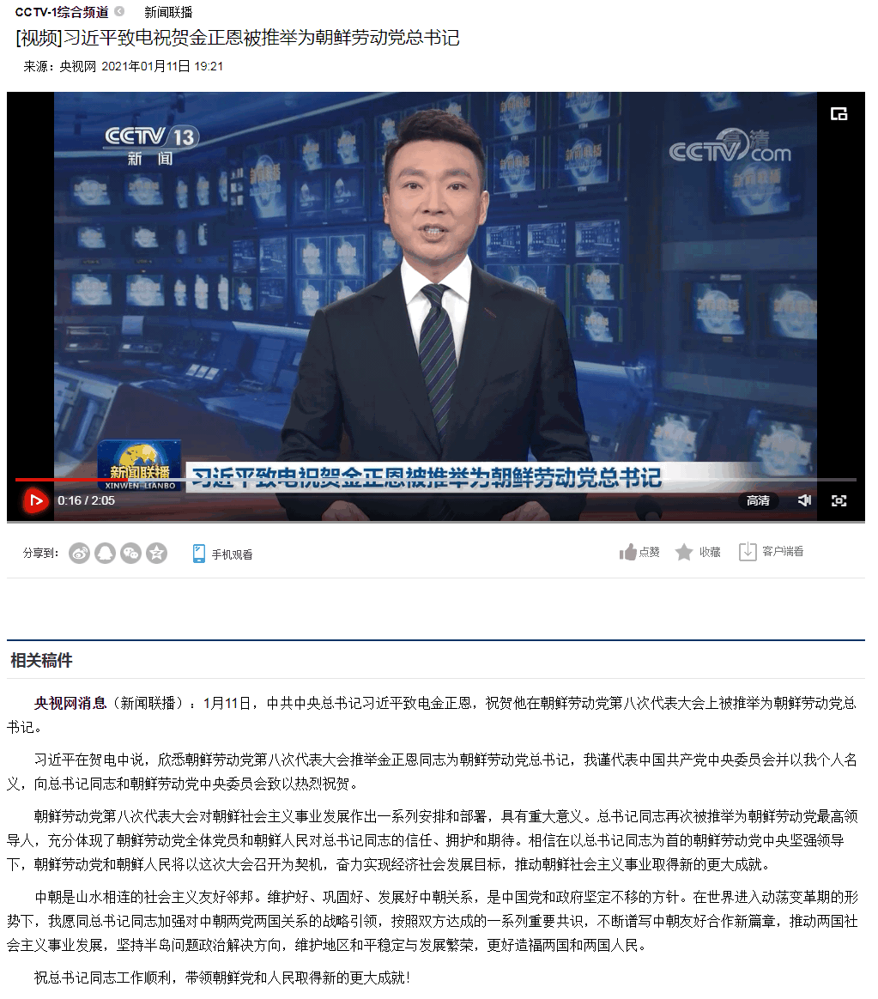

刚爬起来酒劲还在头昏脑胀，上网乱转发现国际一流和谐宜居之都「高学历精英社交圈」正在首页今日头条位置醒目应景推荐了一条享受正国级待遇的重要情报：
对比美帝灯塔国的大手传媒会社：
以及党国高音喇叭：

看到「推举」字眼，不由得一愣。为啥不是「选举」呢？这个字眼明明同时出现了吖。
众所周知文曲星荟萃的码字工作室惜字如金，标点符号都有微言大义，国脸国嘴更是无可挑剔，打嗝放屁磨牙结巴都蕴含着充沛的政治和意识形态内容并引领了激烈的政治和意识形态斗争新动向。
不惮以最大的恶意揣测，在这百善の新时代，第四次工业接班革命正在如火如荼的进行中，党和国家领导人上洛上台过程，已经从察举、科举、选举进化到「推举」了。
按照自诩始终代表了最先进生产力的高学历精英在赞美全球首富马一龙的贺词的说法：只要推力大，板砖煤气罐飞上天。
或曰「“傻了吧，爷会飞”风口上猪都会飞」。